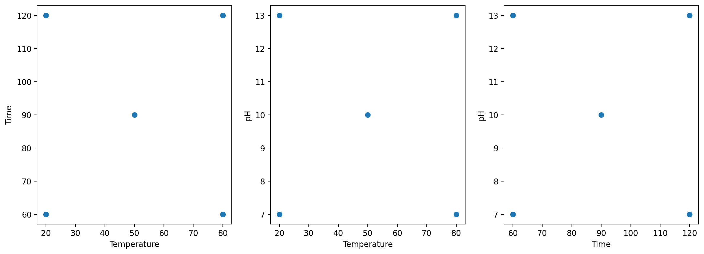
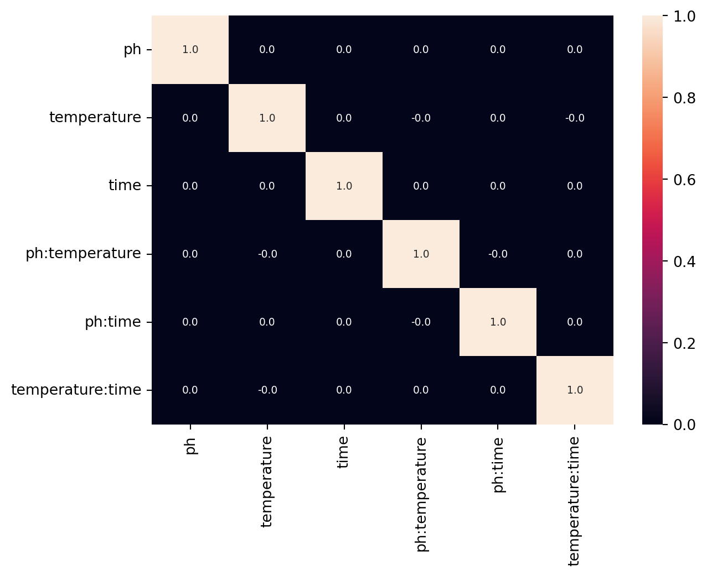
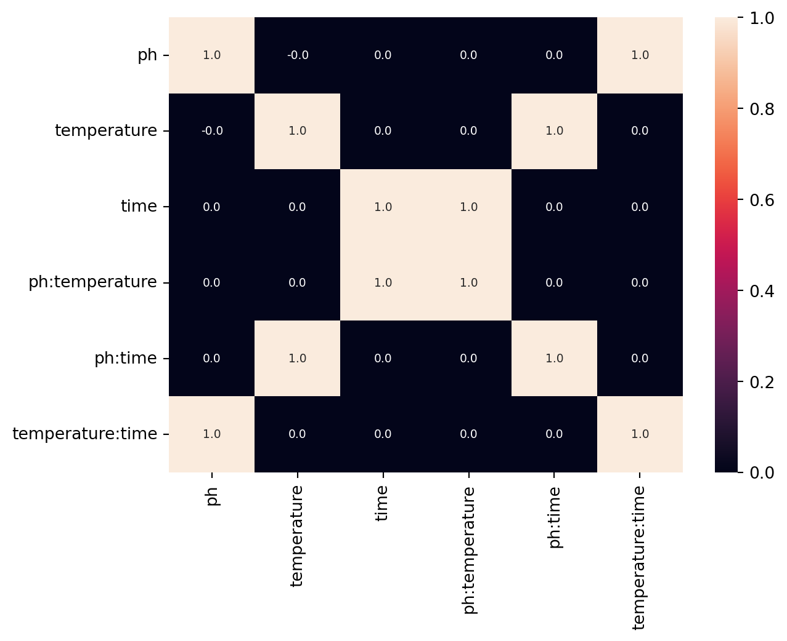
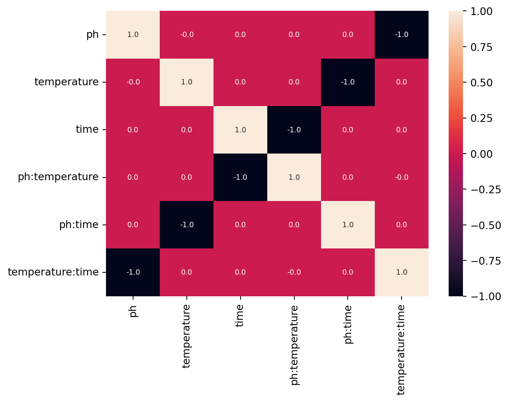

import matplotlib.pyplot as plt
import pandas as pd
import seaborn as sns
import bofire.strategies.api as strategies
from bofire.data_models.domain.api import Domain
from bofire.data_models.features.api import CategoricalInput, ContinuousInput
from bofire.data_models.strategies.api import FractionalFactorialStrategy
from bofire.utils.doe import get_alias_structure, get_confounding_matrix, get_generator
def plot_design(design: pd.DataFrame):
# we do a plot with three subplots in one row in which the three degrees of freedom (temperature, time and ph) are plotted
_, axs = plt.subplots(1, 3, figsize=(15, 5))
axs[0].scatter(design["temperature"], design["time"])
axs[0].set_xlabel("Temperature")
axs[0].set_ylabel("Time")
axs[1].scatter(design["temperature"], design["ph"])
axs[1].set_xlabel("Temperature")
axs[1].set_ylabel("pH")
axs[2].scatter(design["time"], design["ph"])
axs[2].set_xlabel("Time")
axs[2].set_ylabel("pH")
plt.show()Full and Fractional Factorial Designs
BoFire can be used to setup full (two level) and fractional factorial designs (https://en.wikipedia.org/wiki/Fractional_factorial_design). This tutorial notebook shows how.
Imports and helper functions
Setup the problem domain
The designs are generated for a simple three dimensional problem comprised of three continuous factors/features.
domain = Domain(
inputs=[
ContinuousInput(key="temperature", bounds=(20, 80)),
ContinuousInput(key="time", bounds=(60, 120)),
ContinuousInput(key="ph", bounds=(7, 13)),
],
)Setup a full factorial design
Here we setup a full two-level factorial design including a center point and plot it.
strategy_data = FractionalFactorialStrategy(
domain=domain,
n_center=1, # number of center points
n_repetitions=1, # number of repetitions, we do only one round here
)
strategy = strategies.map(strategy_data)
design = strategy.ask()
display(design)
plot_design(design=design)| ph | temperature | time | |
|---|---|---|---|
| 0 | 7.0 | 20.0 | 60.0 |
| 1 | 7.0 | 20.0 | 120.0 |
| 2 | 7.0 | 80.0 | 60.0 |
| 3 | 7.0 | 80.0 | 120.0 |
| 4 | 13.0 | 20.0 | 60.0 |
| 5 | 13.0 | 20.0 | 120.0 |
| 6 | 13.0 | 80.0 | 60.0 |
| 7 | 13.0 | 80.0 | 120.0 |
| 8 | 10.0 | 50.0 | 90.0 |

The confounding structure is shown below, as expected for a full factorial design, no confound is present.
m = get_confounding_matrix(domain.inputs, design=design, interactions=[2])
sns.heatmap(m, annot=True, annot_kws={"fontsize": 7}, fmt="2.1f")
plt.show()
Setup a full factorial design with blocking
Here we setup a blocked full two-level factorial design including a center point and plot it.
blocked_domain = Domain(
inputs=[
ContinuousInput(key="temperature", bounds=(20, 80)),
ContinuousInput(key="time", bounds=(60, 120)),
ContinuousInput(key="ph", bounds=(7, 13)),
CategoricalInput(key="operator", categories=["A", "B", "C", "D"]),
],
)
strategy_data = FractionalFactorialStrategy(
domain=blocked_domain,
n_center=1, # number of center points per block
n_repetitions=1, # number of repetitions, we do only one round here
block_feature_key="operator",
)
strategy = strategies.map(strategy_data)
design = strategy.ask()
display(design)
plot_design(design=design)| ph | temperature | time | operator | |
|---|---|---|---|---|
| 0 | 7.0 | 20.0 | 60.0 | A |
| 1 | 13.0 | 80.0 | 120.0 | A |
| 2 | 10.0 | 50.0 | 90.0 | A |
| 3 | 7.0 | 20.0 | 120.0 | B |
| 4 | 13.0 | 80.0 | 60.0 | B |
| 5 | 10.0 | 50.0 | 90.0 | B |
| 6 | 7.0 | 80.0 | 60.0 | C |
| 7 | 13.0 | 20.0 | 120.0 | C |
| 8 | 10.0 | 50.0 | 90.0 | C |
| 9 | 7.0 | 80.0 | 120.0 | D |
| 10 | 13.0 | 20.0 | 60.0 | D |
| 11 | 10.0 | 50.0 | 90.0 | D |
Setup a fractional factorial design
Here a fractional factorial design of the form \(2^{3-1}\) is setup by specifying the number of generators (here 1). In comparison to the full factorial design with 9 candidates, it features only 5 experiments.
strategy_data = FractionalFactorialStrategy(
domain=domain,
n_center=1, # number of center points
n_repetitions=1, # number of repetitions, we do only one round here
n_generators=1, # number of generators, ie number of reducing factors
)
strategy = strategies.map(strategy_data)
design = strategy.ask()
display(design)| ph | temperature | time | |
|---|---|---|---|
| 0 | 7.0 | 20.0 | 120.0 |
| 1 | 7.0 | 80.0 | 60.0 |
| 2 | 13.0 | 20.0 | 60.0 |
| 3 | 13.0 | 80.0 | 120.0 |
| 4 | 10.0 | 50.0 | 90.0 |
The generator string is automatically generated by making use of the method get_generator and specifying the total number of factors (here 3) and the number of generators (here 1).
get_generator(n_factors=3, n_generators=1)'a b ab'As expected for a type III design the main effects are confounded with the two factor interactions:
m = get_confounding_matrix(domain.inputs, design=design, interactions=[2])
sns.heatmap(m, annot=True, annot_kws={"fontsize": 7}, fmt="2.1f")
plt.show()
This can also be expressed by the so called alias structure that can be calculated as following:
get_alias_structure("a b ab")['a = bc', 'b = ac', 'c = ab', 'I = abc']Here again a fractional factorial design of the form \(2^{3-1}\) is setup by providing the complete generator string of the form a b -ab explicitly to the strategy.
strategy_data = FractionalFactorialStrategy(
domain=domain,
n_center=1, # number of center points
n_repetitions=1, # number of repetitions, we do only one round here
generator="a b -ab", # the exact generator
)
strategy = strategies.map(strategy_data)
design = strategy.ask()
display(design)| ph | temperature | time | |
|---|---|---|---|
| 0 | 7.0 | 20.0 | 60.0 |
| 1 | 7.0 | 80.0 | 120.0 |
| 2 | 13.0 | 20.0 | 120.0 |
| 3 | 13.0 | 80.0 | 60.0 |
| 4 | 10.0 | 50.0 | 90.0 |
The last two designs differ only in the last feature time, since the generator strings are different. In the first one it holds time=ph x temperature whereas in the second it holds time=-ph x temperature, which is also reflected in the confounding structure.
m = get_confounding_matrix(domain.inputs, design=design, interactions=[2])
sns.heatmap(m, annot=True, annot_kws={"fontsize": 7}, fmt="2.1f")
plt.show()